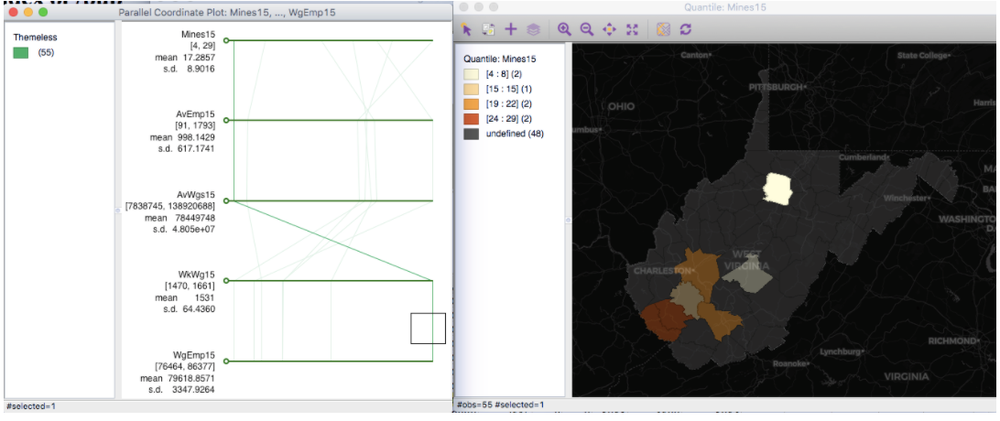

Chapter 4 “Lab 3. Principles of Spatial Scale, Part 1”
West Virginia Coal Mining Spatial Analysis: County-Level Variations
4.1 Overview
Objectives for this practical:
4.2 Research Question
4.3 Environment Setup
We will be working with GeoDa and Excel in this practical. Ensure you’ve properly downloaded the software and are able to successfully open.
4.4 Download Data
In this practical, we will explore how coal mining impacts West Virginia in a contemporary context. Is it spatially distributed throughout the state? How does a change in coal mining impact jobs throughout West Virginia? What is the spatial scale of this phenomenon?
To explore these questions, we need the following data:
* Coal-mining jobs in West Virginia at some finer geographic resolution * Corresponding boundary files for the state, matched by geographic identifier * Additional covariates, like population and income levels
4.4.1 Coal Mining Job Data
First, we need to find a dataset that approximates coal mining employment. Try various searches on your own to find this – note that it is not a straightforward task, and will take time to perfect. While this lab provides two sources, you’ll find that uncovering data on your own is a worthwhile endeavour to perfect.
A search for coal mining job data uncovers two accessible sources:
- Coal mining jobs as an industry code by state or county, Bureau of Labor Statistics for years 2015-2019 (updated yearly)
- Mining jobs as part of the category “Agriculture, forestry, fishing and hunting, and mining” at the tract level (at minimum) within the US Census ACS survey for years 2009-2018.
We will begin with a more restricted definition of coal mining, and so will use the Bureau of Labor Statistics data first. First, go to https://data.bls.gov/cew/apps/data_views/data_views.htm#tab=Tables to find the Quarterly Census of Employment and Wages. You can choose a geographic cross-section for only West Virginia (“all counties in a state, one industry”) or use the default (“all states, one industry”).
For this example, we will select “all counties in a state, one industry” :
Next, select the year 2015, choose “Annual Averages” in the Quarter dropdown, “Private” in the Ownership dropdown, and select the NAICS 2121 code for Coal Mining. Click on “Get Table.”

Inspect the table that is shown. Does the data match with your expectations? Will the form be easy enough to clean and merge with a master county shapefile? Look for a “key” – a geographic identifier that we can merge data on.

If we were to try to download the source data, we’ll find that the geographic identifier is incomplete or obscured. There is no county ID number, and instead we have a string or character field naming the entire county with state information.
Thus, we will perform a crude “hack” to extract data from the table opened in the tab. We don’t have a good identifier in the main table shown either, but can work with the labeled county field (text format). We use Excel here as an intro-data cleaning tool in part because the data is small, and a manual update may be faster than coding out a scraping solution; however, for more regular scraping needs, a coding solution may be preferred. Select all fields, copy, and paste into a new Excel worksheet
In Excel, pasting the data should generate a readable format, with the exception of the headers. Insert a new row above the first data row, and enter new column headers that meet GIS standards. It is recommended that the year of data chosen is incorporated, for example:
- Mines15 (here assumed as “annual establishments”)
- AvEmp15
- AvWgs15
- WkWgs15
- WgEmp15
And so forth. Upon completion, delete rows that are not necessary. Next, we have to split the county and state field, currently the first column, to extract just the county name. In Excel, this is done by highlighting the field, and selecting the “text to columns” option in the Data tab. You should select a “space” as a delimiter, so we can get the name of the county on its own. (This will match the county shapefile we will merge to later.) You can keep or delete remaining information according to preference.
Is our new county id field unique? If you downloaded data from multiple US states, you will notice that there are two Jefferson counties, making this a non-unique field that will pose difficulty for our data merges. Because we are limiting our analysis to West Virginia, any other states can be deleted at this stage, though consider alternatives of wrangling this issue in future work.
Are we done? First, look at all the fields – are number fields clearly indicated as such in formatting? Convert all number fields to number formats in Excel (right-click, “format cells”). If these fields are indicated as text and include commas, it may pose challenges when brought into other software. Remove any commas in numerical fields that will pose challenges.
The final file should look like this:

Save your final, clean worksheet as a CSV.
4.4.2 County Boundary File Data
We used 2015 data for our analysis, and so need complementary data at the county level. Go to the West Virginia GIS clearinghouse website, search “county” with category “boundaries” and download a shapefile: http://wvgis.wvu.edu/data/data.php. You may need to experiment with different file downloads until you find one that works for you.

Eventually I got to this screen, and selected the final option as one that worked without errors for me. You may need to troubleshoot accordingly and select a version that works for you!

Next, open GeoDa, load, and inspect the WV county shapefile. Which columns can you merge on? Once you have explored the data and done any related cleaning, save as “WV_Counties.shp”. Close your current dataset in GeoDa, and open your WV_Counties shapefile.
(Alternatively you can work from the original shapefile downloaded, just be sure to save!)
4.5 Merge Data
In GeoDa, under Table, select “Merge.” Browse and select your CSV of coal mining jobs. What will you merge with? In the shapefile, the full county is listed as COUNTY (if using the wvgis.wv.edu dataset). Choose the right identifier from the CSV, and bring in your new data. If the merge is not successful, troubleshoot accordingly. This takes practice!

4.6 Explore Data
Fields without values will be grayed out. Do all counties have coal mining jobs? Why may this be the case? Next, try different choropleth maps and histograms of the different fields to explore your data. For example: Natural Breaks of Annual Average Employment, Standard Deviation of Annual Wages, Etc.
What are the findings of coal mining jobs in 2018? What county has the most coal jobs? Are there any apparent outliers?
You are encouraged to try additional options in the GeoDa toolbox, like the Parallel Coordinate Plot. Select the variables you just pulled in to view at once, with a simple map next to it.
For example, select the line in the Parallel Coordinate plot corresponding to the highest average wage per employee. This county also has the fewest coal mining establishments for that category, as well as fewest miners. It may therefore make sense that this county has a higher wage per employee. What are some other reasons you would hypothesize?

If we select counties that have more mining establishments, we see they are also “clumped” together, displaying a distinct form of spatial dependence. Why might this be the case?

What about that one remaining county, that has fewer mines overall? What are the wages like in that county, and what may drive some of the outcomes you find? Are you surprised?
4.7 Add Another Time Period
Let’s see how things changed over time. Repeat above steps to find and merge the same data, but from the year of 2018. Note that for some reason, 2019 data on coal mining in W. Virginia is not available.
Save your shapefile so all data added from 2015 and the new time period are included in your new shapefile. In addition to county information, your data names should be as follows (for example):
- Mines15
- AvEmp15
- AvWgs15
- WkWgs15
- WgEmp15
- Mines18
- AvEmp18
- AvWgs18
- WkWgs18
- WgEmp18
Is there any change in jobs over time? Where is the county with the most coal jobs in the new time period? Are there any apparent outliers in the new time period?
Save your final cleaned county shapefile in a folder that is reserved for this practical. We will use this folder next week for continued exploration.
For this week’s Quiz, you will use maps generated from this lab that best capture the state of coal mining in W. Virginia as a single cross-section (ie. one year), and then as a change over time. You will also write a short reflection on what you found, something you may have been surprised by, or other reflection from the lab experience. Accordingly, there is no Lab discussion thread this week.
4.8 Installations for Next Week
Next week, our lab will use R and RStudio for continued analysis. For preparation, please do the following using the links provided in this week’s module:
- Install R
- Install R Studio
- Practice the basics of R (2 tutorial version options are included)
- Install libraries: tidyverse, tidycensus, rgdal, sf, tmap, ggplot
- Challenge: Start TidyCensus Basics tutorial: https://walkerke.github.io/tidycensus/articles/basic-usage.html